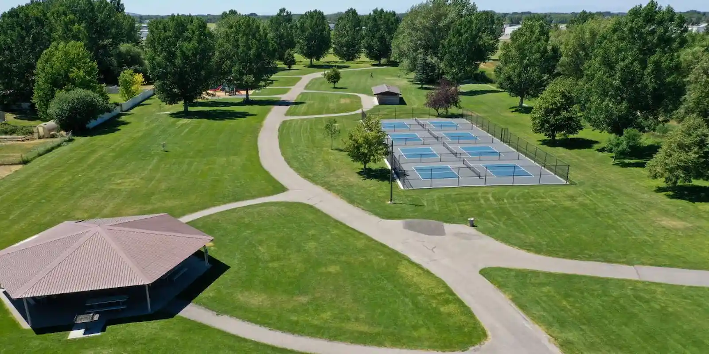
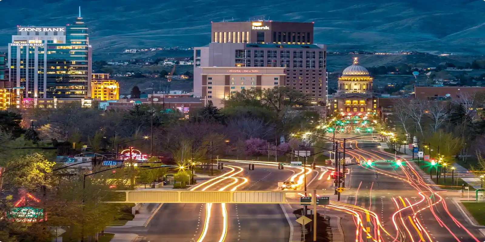
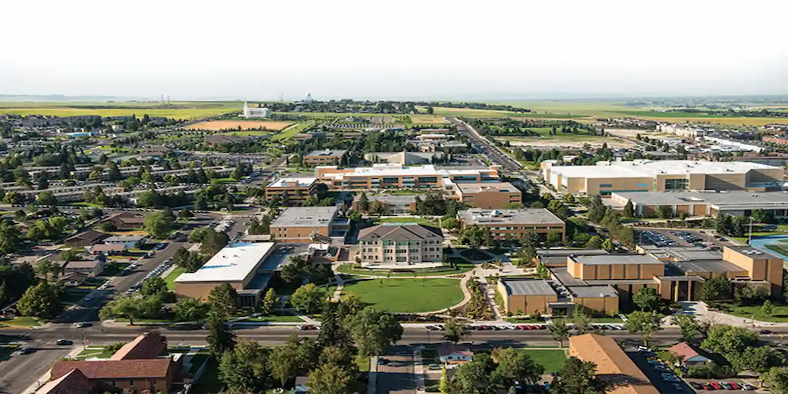
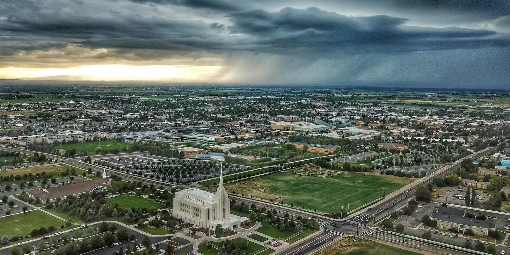
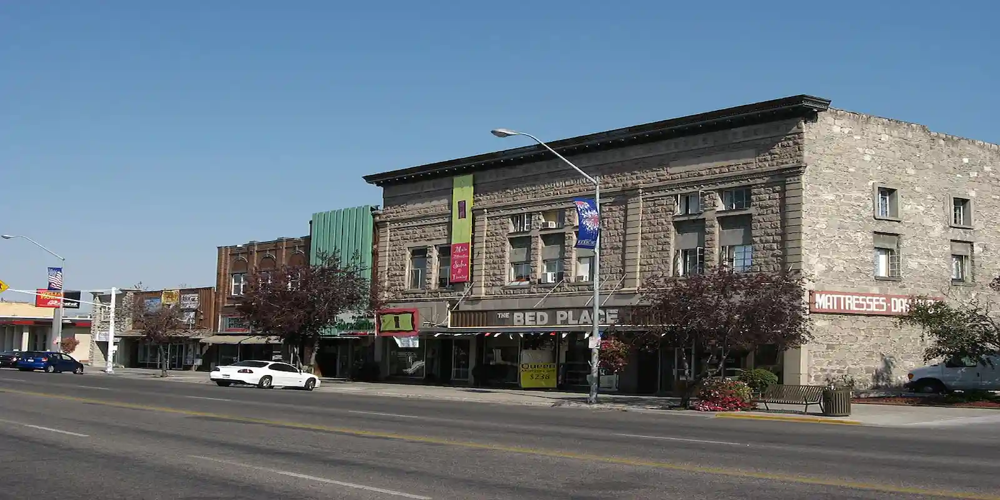

Welcome to Rexburg Chamber of Commerce Discover Page





History
Rexburg, Idaho, is a city with a rich history dating back to the late 19th century. Here's a brief overview of its history:Early Settlement: Rexburg was founded in the 1880s by Mormon settlers who were sent by leaders of The Church of Jesus Christ of Latter-day Saints (LDS Church) to establish communities in the western United States. These settlers were attracted to the area's fertile land and abundant water supply.
Naming of Rexburg: The city was named after Thomas Edwin Ricks, a prominent local Mormon leader who played a significant role in the settlement and development of the area.
Agriculture and Education:Throughout its history, Rexburg has been primarily an agricultural community, with farming playing a crucial role in its economy. Additionally, education has been important, with the establishment of Ricks College in 1888. Ricks College later became Brigham Young University–Idaho (BYU-Idaho), a private university affiliated with the LDS Church.
Natural Disasters: Rexburg has faced challenges from natural disasters. In 1976, the nearby Teton Dam collapsed, causing massive flooding in the area, including Rexburg. The disaster resulted in significant damage to property and infrastructure but also brought the community together in recovery efforts.
Economic Growth and Development: Over the years, Rexburg has experienced steady growth and development, particularly with the expansion of BYU-Idaho. The university has brought in students and faculty from around the world, contributing to the city's cultural diversity and economic vitality.
Cultural and Recreational Opportunities: Rexburg offers various cultural and recreational opportunities for residents and visitors alike. These include local events, such as the Idaho International Dance and Music Festival, as well as outdoor activities in the nearby Yellowstone and Grand Teton National Parks.
Overall, Rexburg's history reflects its origins as a Mormon settlement, its agricultural heritage, its resilience in the face of challenges, and its growth into a vibrant community with a strong educational and cultural presence.